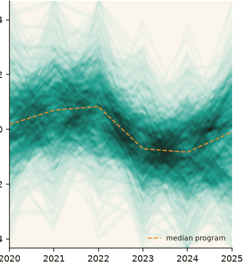

Finding 1
The authors' code breaks on programs that start or stop.
One partial series turns a column blank (NaN). 274 of 1,052 Corning-mock programs are partial, so every column fails. Our one-line gap-safe fix: none.
DenseLines (density line charts) · from visualization research
The one picture


👍 go ahead · 👎 drop · or just comment what you think
Ends in an agent-ready library: fast (backend chosen by benchmark, usually a Rust core), parity-tested against the original, with diagnostics and null tests that say pass / warn / fail, a how-to-judge guide and a skill card. Library: denselines (working name) · repo: not created yet · Engineering ticket: #95. Finish-line spec: FEEDBACK.md.
Do: Build the Rust core from parity_harness.rs (runs/2026-11-13) with per-series weights, 0/0 := 0 for columns where a series is absent, and live-count n(c) and weight-mass W(c) channels.
Pass when: Relative difference ≤ 1e-6 vs reference commit 083890c on full-span inputs (n = 100, 1,000, 5,000), with column sums equal to n. On the gap case (50 series, 10 stopping at column 300), there are 0 NaN columns and the column sum after column 300 is 40.
Result: 2026-11-23 (runs/2026-11-23-build/denselines): max abs diff / max ref 1.15e-7, 1.36e-7, 1.16e-7 at n = 100, 1,000, 5,000; column sums = n; gap case 0 NaN columns, column sum 40 after column 300. Pass.
Do: Stream series into the accumulator instead of holding every rasterised path. Compare against the exact NumPy port.
Pass when: 10,000 series × 1,000 columns in ≤ 0.5 s (Rust took 0.50 s and NumPy 62 s). 50,000 series finish with peak RSS < 2 GB; the 11-13 run hit the 15.6 GB memory limit. Commit the timings.
Result: 2026-11-23: streamed Rust core, 10,000 × 1,000 in 0.395 s (median of 3, 8 threads); 50,000 × 1,000 in 1.35 s with peak RSS 356 MB. Exact NumPy port: 1.51 s for 1,000 × 1,000. Pass.
Do: Pre-register. Regenerate both SYNTHETIC mocks with a new seed, once with the planted clusters on and once with them off (years shuffled within program).
Pass when: Clusters on: Wasserstein-1 distance to the true-path chart below the unnormalised density on both mocks (11-13: 0.0526 vs 0.0555 on Corning). Clusters off: the Hartigan dip test flags a branch in ≤ 5% of 200 shuffles.
Kill rule: If it fails to beat the unnormalised density on both mocks, ship it as a plotting utility with no judging claims.
Result: 2026-11-23, pre-registered (runs/2026-11-23-build/PREREG-D3.md), mocks regenerated with seed 20261123: W1 to truth 0.0496 vs 0.0524 (Corning) and 0.0359 vs 0.0370 (MS), DenseLines closer on both; 0 of 200 shuffles flagged on each mock. Pass. Caveat: the dip test also misses the planted clusters (p = 0.99), so step 4 needs a branch test with power.
Do: Add diagnostics(): share of columns with fewer than 5 live series, weight concentration (max share > 20% warns), gap fraction. Add null_test() (year-shuffle envelope plus dip test) and HOW_TO_JUDGE.md, with the minimum series count from a power study of a branch planted in 10% of series.
Pass when: Every check is driven to pass, warn and fail in tests. The power table is published.
Result: 2026-11-24, power study done (pre-registered, runs/2026-11-24-build/PREREG.md Addendum 2, merged in PR #108 before the run; SYNTHETIC, 10% of series branching at the last column): the Hartigan dip test has size 0-0.25% and power 0 at every N up to 2,000 (it is calibrated against a uniform, so it is far too cautious on Gaussian-like clouds) and is dropped as the branch check. A two-component Gaussian-mixture likelihood-ratio test (simulation-calibrated null, size 0.05 by construction) reaches power >= 0.80 at a branch 2 SD away with 500 series (0.82), at 3 SD with 200 (0.99), at 1.5 SD only with 2,000 (0.82). Still to do: diagnostics(), null_test() in the library, HOW_TO_JUDGE.md, and the pass/warn/fail unit tests (needs the repo).
Do: Build the library's own repo + human Pages site in the Google Research style built from the template (docs/methods-scout/library-site-template/). Also write AGENTS.md, llms.txt, API docs, CHANGELOG, CITATION, NOTICE, quickstart and SKILL.md. Build wheels and publish nothing.
Pass when: The quickstart and README blocks run in CI, wheels build, every page of the template-built Pages site returns 200 with no unfilled {{tokens}} and nothing is published or promoted. Real budgets are an optional extra once Jared provides them.
| Symbol | Meaning | Here |
|---|---|---|
| \(s = 1,\dots,n\) | series | programs, each indexed to its own mean (log spend vs own mean) |
| \((c, r)\) | pixel: column \(c\) (time), row \(r\) (value) | 500 columns across FY2020–25 |
| \(B_s(c,r)\in\{0,1\}\) | 1 if series \(s\)'s rasterised line passes through the pixel | Bresenham line, set-to-1 |
| \(k_s(c) = \sum_r B_s(c,r)\) | pixels series \(s\) lights in column \(c\) | steep segments light many |
| \(D(c,r)\) | the density image | what is coloured |
Each series spreads exactly one unit of weight over the pixels it touches in each column. The naive alternative (the "line count" heatmap) is \(\sum_s B_s(c,r)\), where a steep line contributes \(k_s(c)\) units.
DenseLines is a picture, not a test. Anything read off it (like the residual "brush" that selects programs ending above a valley) needs its own null; the valley's existence depended on smoothing (2–4 px yes, 6–8 px no), which is why the New-use card asks for a bandwidth-free dip test with a year-shuffle null.
Two series on a 3-column canvas. Series A is flat: it lights 1 pixel in each column. Series B is flat in columns 1 and 3 but jumps in column 2, lighting 3 pixels there.
Line count: column 2 totals \(1 + 3 = 4\) units, so B's jump looks like three series. DenseLines: B's three pixels get \(1/3\) each; every column totals \(1+1 = 2 = n\). If B stopped after column 2, the reference would compute \(0/0\) in column 3 and blank it; gap-safe gives column 3 a total of 1 and the live-count strip shows 1.
Followed: Moritz & Fisher (2018), "Visualizing a Million Time Series with the Density Line Chart", arXiv:1808.06019 — §3.1 (arc-length normalisation), §3.1.1 (pixel-count approximation), §3.2 (algorithm). Reference code: line-density-rust, commit 083890c; our port runs/2026-11-13/denselines.py matches it to ≤ 2.1e-7.
One partial series turns a column blank (NaN). 274 of 1,052 Corning-mock programs are partial, so every column fails. Our one-line gap-safe fix: none.
AI-demand group, Corning mock. The brush works at 2–4 px smoothing and vanishes at 6–8 px.
Precision: 100%, 51% and 56%.
The noisiest 10% of programs take 12.0% of the ink without normalisation and 10.7% with it (Corning mock). The density view is the gain.
Parity with the authors' reference to 1.4e-7 (relative), no NaN columns when series stop early, 10,000 series × 1,000 columns in 0.40 s, and 50,000 series in 1.35 s at 356 MB (the 11-13 run hit the 15.6 GB limit). SYNTHETIC inputs.
Pre-registered, on mocks regenerated with a new seed: the DenseLines chart is closer to the true-path chart than the unnormalised one on both mocks (W1 0.0496 vs 0.0524; 0.0359 vs 0.0370). Shuffling years made the branch test fire in 0 of 200 runs, but it also missed the planted clusters, so that test has no power here.
SYNTHETIC, 10% of series branch at the last column, 500 runs per cell, 2,000 null runs per size. Hartigan dip: power 0 up to 2,000 series (size 0-0.25%). Two-component mixture likelihood-ratio test: power 0.82 at 500 series for a branch 2 SD away, 0.99 at 200 series for 3 SD, 0.82 at 2,000 for 1.5 SD (computed).
The mixture test's size is set to 5% by calibrating on the same null simulations, so it is not an independent size check, and the null is Gaussian by construction.
| Home field (server monitoring, stock prices) | Our data |
|---|---|
| One server's CPU trace or one stock's price | One program's spend path, indexed to its own mean |
| Thousands of long, high-frequency series | About 1,000–1,800 programs with 5–6 yearly points |
| Series that all span the window | Programs that start and stop (274 of 1,052 Corning-mock; 361 of 1,765 MS-mock) |
One chart can show where a thousand programs went over five years: the common dip, and the split into a recovering group and a lagging group. It does not prove a group exists, but it points at where to look. Pair it with the text: the chart and the descriptions found different members of the same hidden group.
Status: approved 2026-11-13. Owed: the Rust parity check and a real-panel run. The top pick builds the gap-safe, weighted Rust core (parity first, then speed) with a live-count channel.
Not graded Home-field grading started with the 2026-11-16 edition. What the 11-13 page and the paper record:
The reference NaNs out on start/stop programs, and the exact NumPy port is 10–120× slower. Build a Rust core (parity first, then speed) with gap-safe columns, per-series weights and a live-count channel.
Math sketch. \(D_w(c,r) = \sum_s w_s\,B_s(c,r)/k_s(c)\) with \(0/0 := 0\); also return \(n(c)=\sum_s \mathbf 1[k_s(c)>0]\) and \(W(c) = \sum_s w_s \mathbf 1[k_s(c)>0]\) so each column can be shown as a density (\(D_w/W\)) or as mass.
Test. Relative difference ≤ 1e-6 vs commit 083890c on full-span inputs, zero NaN columns on both mocks, and ≤ 2× the reference's time at 10,000 series.
Replace each noisy path with ebnm posterior draws (weight 1/draws). Noise, not steepness, is what separates today's chart from the truth chart.
Math sketch. \(D(c,r) = \sum_s \tfrac1R\sum_{q=1}^R B_{s}^{(q)}(c,r)/k_s^{(q)}(c)\), where path \(q\) is a draw from the posterior of program \(s\)'s true path; each program still carries one unit per column.
Test. Lower Wasserstein distance to the true-path chart than today's 0.053 (Corning) and 0.035 (MS), and no false branch on a mock with the clusters switched off.
Text and chart find different members; together they reach 94% recall on the AI-demand group. The brush needs a bandwidth-free branch test.
Math sketch. Hartigan's dip statistic on the last-column residual distribution, with a null from year-shuffled programs; select programs above the antimode only when the dip test rejects.
Test. Recall ≥ 0.7 at precision ≥ 0.5 on both mocks, at any smoothing from 2 to 8 px.
👍 on the issue means go with the ★ top pick. To choose another, just say so in a comment.
Yes: a density view of 1,000+ programs, with a live-count strip for start/stop waves.
The residual view points at co-moving groups (94% recall with a text keyword), but is not a test.
The chart and the descriptions find different members of the same group.
Still missing: real program budgets; the Rust parity check is owed. · All questions
Full tables, code and data notes: the 2026-11-13 edition · scripts in runs/2026-11-13/ · card sources in cards/denselines/.
👍 go ahead · 👎 drop · or just comment what you think